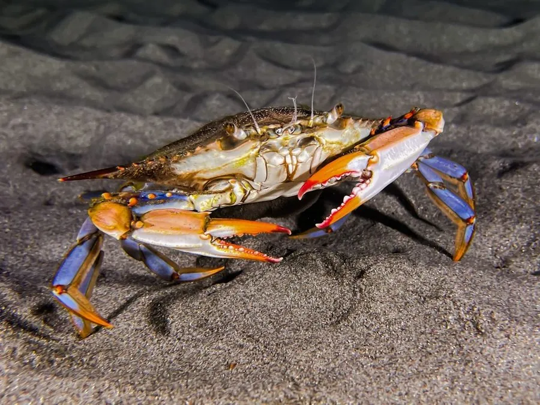

甲壳动物 · 动物界
蓝蟹 Callinectes sapidus

西大西洋沿岸的大型梭子蟹，雄蟹螯足呈亮蓝色、末对步足扁平如桨，能快速横游，是北美重要的经济蟹类，并已入侵多地。
- 分类
- 门节肢动物门纲软甲纲目十足目科梭子蟹科属蓝蟹属
- 栖息环境
- 河口、盐沼、潟湖、海草床与浅海沙泥底，耐盐度变化
- 地理分布
- 西大西洋沿岸，从美国东部至阿根廷；已被引入欧洲、地中海与亚洲
- 保护级别
- IUCN 未评估；北美实施捕捞尺寸、抱卵蟹禁捕等管理措施
物种志
蓝蟹甲宽可达 23 厘米，体重 0.3–1 千克。背甲呈菱形，前缘两侧各有一排锯齿，其中一枚特别长，形成明显的侧刺；雄蟹的螯足与步足呈鲜艳的蓝色，螯指尖端橙红，雌蟹则偏橄榄绿与橙红，螯尖红色较深。最特别的是末对步足，末节扁平宽大呈桨状，可360度旋转，使它能快速横向游动甚至倒退。
它们分布于西大西洋沿岸，从美国新英格兰至阿根廷，栖息于河口、盐沼、潟湖与浅海沙泥底，对盐度变化耐受性强，可在淡水到全海水之间迁移。食性杂，捕食贝类、小鱼、虾、蟹、蠕虫，也食腐肉与水生植物。雌蟹在河口产卵，幼体经多个浮游阶段后进入河口育肥。它是北美最重要的经济蟹类之一，切萨皮克湾的蓝蟹渔业尤为著名。因压舱水传播，它已被引入欧洲、地中海与亚洲部分海域，成为外来种。
形态与习性
- 甲宽可达 23 cm，体重 0.3–1 kg
- 食性贝类、小鱼、虾、蟹、蠕虫、腐肉与水生植物
- 游泳足末对步足末节扁平呈桨状，可快速横游
- 体色雄蟹螯足亮蓝色、螯尖橙红，雌蟹偏橄榄绿
- 耐盐性可在淡水至全海水之间迁移，适应河口环境
- 繁殖雌蟹在河口产卵，幼体经浮游阶段后进入河口育肥
- 寿命约 3–4 年
趣味知识
- 蓝蟹最后一对步足扁平成桨，划起来能让它横着快速游走。
- 雄蟹的钳子是亮蓝色的，钳尖却点着一抹橙红。
- 它随压舱水被带到欧洲和亚洲，如今在地中海也能捕到。